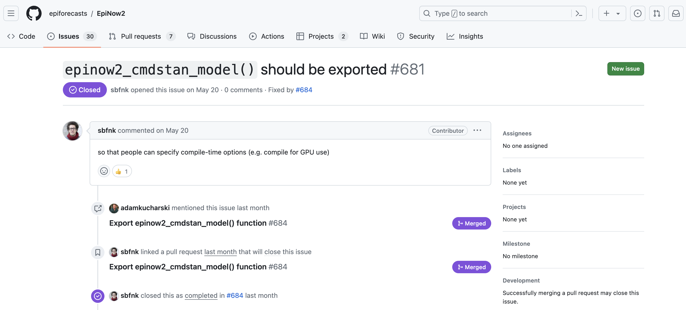
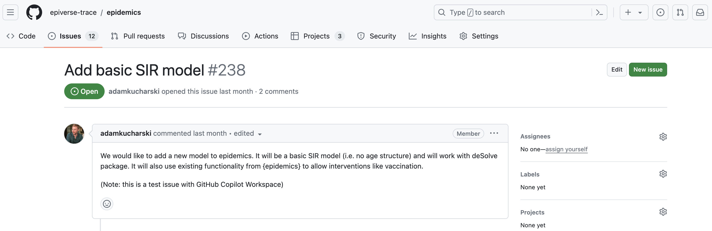

![]()
GitHub recently previewed ‘Copilot Workspace’, which aims to use generative AI to assist software developers. Rather than just giving in-line suggestions, as GitHub copilot does, workspace allows users to map out and execute entire projects. We got early preview access to the tool, so decided to see how well it performed for our needs in Epiverse-TRACE.
In the Epiverse-TRACE initiative we aim to develop an ecosystem of epidemic analytics tools as Digital Public Goods in the form of R packages. We aim to follow best-practices given that our tools will be used to inform public health decisions. For efficiency, we use a range of development tools, including integrated development environments (IDE), such as RStudio and Visual Studio Code, other R packages to help check and document our code, for example {lintr} and {roxygen2}, and version control and code sharing tools, git and GitHub.
Given the rapid development and increasing availability to artificial intelligence (AI) models, specifically large language models, offer the potential to be another development tool to add to the arsenal of researchers and software engineers to enhance productivity and improve the reliability of the code we write and others depend upon (Hoek et al. 2024). Large language models like ChatGPT from OpenAI, Gemini from Google, Claude from Anthropic, as well as many others and new ones frequently appearing, have presented opportunities to quickly generate material – text, code and images – from text prompts.
A small group of Epiverse-TRACE professors and research software engineers decided to explore the suitability of one such, GitHub Copilot integrated with GitHub Workspaces, for some typical use cases encountered in our day-to-day work. We do note that many other such tools are available, and we chose Copilot in Workspaces as our code is hosted on GitHub, making for easy evaluation of the specific contribution of the AI tool. However, some of our broad conclusions are based on using other tools for similar tasks.
The aim of this blog post is to summarise our experiences with Copilot and Workspaces, and share our thoughts more generally about how the current feature set of AI-powered development tools could help with our daily development tasks, and with research software development at large. We evaluated Copilot workspace across three tasks of varying difficulty and requirements:
Experiment 1: Exporting an R function by updating the documentation
Experiment 2: Adding a basic epidemic model to an existing R package that contains other epidemiological models
Experiment 3: Conducting a code review on an R package
Experiment 1: Export an R function by updating the documentation
Difficulty level: basic
The first experiment was on the {EpiNow2} R package. An existing Issue #681 was chosen. It was a simple task to evaluate Copilot workspace’s ability to interpret requests that require small changes to the codebase of a package (i.e. can be achieved in a single commit by changing less than 5 lines of code). The issue stated that an internal function, epinow2_cmdstan_model() should be exported, with the issue description explaining this would help users specify custom options for running the models.

Outcome
The specification provided by Copilot workspace diagnosed the issue requirements, mentioning that the NAMESPACE file, which stores information on functions offered by a package and functions imported from other packages, would have to be updated for the R package to export this currently unexported function. The proposed solution also addressed the desired changes, stating that the function was to be exported and the keyword internal would be removed. The automatically generated plan proposed to edit the file documentation and NAMESPACE, but we edited this to more specifically replace the @keyword internal {roxygen} tag with @export.
Our thoughts
The implementation offered by GitHub copilot workspace was correct and replaced @keywords internal with @export in the correct function documentation epinow2_stan_model().
However, it also changed the formatting of one of the function arguments (@param model) by moving some text to the next line and added a comma to the last but one item listed in the sentence. (It seems AI has taken a side on the Oxford comma debate).
Overall, this test case of GitHub copilot workspace was a partial success. It correctly recognised the links between inline R function documentation, Roxygen tags, and the R-specific documentation files in man/. However, it (naturally) does not have a mechanistic understanding of package development and how changing tags in documentation is used to auto-update doc files using development tools. It correctly modified the part of the file needed to export an internal function. This showcases an example of where this technology can be beneficial: those new to a language or paradigm that have not yet picked up all of the development details that are often second nature to experienced developers. In this example, the time taken to make this change in GitHub copilot workspace was likely ~10x longer than what our RSEs would take. However, if someone was used to developing in say, Python, and was new to the conventions of exporting functions in R using {roxygen} documentation, this test case shows how copilot workspace can reliably assist. On the other hand, because these changes make no reference to standard development tools, they would not help new developers learn how or where to use them.
The changes made will still require the user to manually run the documentation (using either devtools::document() or roxygen2::roxygenize()) to update the package NAMESPACE for the function to be exported. Our recommendation would be for AI tools to integrate with and call development tools used by developers (analogous to pre-commit hooks running tools before committing) to make sure this is taken care of all in a single generative step.
Experiment 2: Add a simple epidemic model to an R package that contains more complex models
Difficulty level: moderate to high
{epidemics} is an Epiverse-TRACE R package that exports a range of compartmental epidemiological models of varying complexities and applications.
In the second test case, we created an issue in the {epidemics} R package requesting a basic SIR model, with the issue description requesting the model to have no age structure and to use existing functionality in the package to specify a disease intervention. Additionally, the issue requested that the model be solved with the {deSolve} R package, which is a differential equation solver in R. A basic SIR model would have been new to the package, but one of several other compartmental models, and simpler than the models already implemented.

Outcome
GitHub copilot workspace outlined the existing functionality in the package and proposed changes including adding a new file called R/model_sir.R, which follows the model_*.R naming convention used in {epidemics}. As requested, copilot also proposed that the new SIR model would support the use of interventions that are already been implemented in the package.
Our thoughts
The code generated was an R function that constructed a basic SIR model, and this was well documented using a {roxygen2} documentation block. However, several aspects of the code generated did not match the proposal generated by copilot workspace, and the code contained inadvisable coding practices in R (i.e. code smells). Firstly the SIR model itself. The model implemented follows the standard set of differential equations that are solved using {deSolve}, as requested in our prompt. However, the model does not have any options to input interventions, which the proposed solution by GitHub copilot workspace suggested it would. The second downside is the use of require(deSolve) in the function body of the generated code. This is bad practice in R package development as functions should namespace any functions that are being called from other packages (e.g. packagename::func_name()).
This task required copilot workspace to understand the contents and conventions of the {epidemics} R package and generate a simple compartmental model which would integrate with the infrastructure in the package for defining interventions in models. Although it correctly summarised the package contents, its attempt to answer the specific request from our prompt had many inaccuracies. The generated code is likely influenced by the many examples of SIR models written in R on the internet and on GitHub. These might be R scripts or gists and thus coding practises used there are not always appropriate for writing code to be distributed in an R package, resulting in decisions like having require(deSolve) in the function.
AI-generated code like that seen in this example showcases where users need to be diligent and not assume that the text descriptions from copilot match the code. In the end, this was a test example and was unlikely to be merged into {epidemics} even if the code was correct. However, with the code generated, it presents almost no use; it would require as much time for an RSE to refactor this function as it would to write one from scratch following the design principles and demands of the {epidemics} package.
Experiment 3: Conducting a code review on an R package
Difficulty level: moderate to high
In the last test case, we requested GitHub copilot workspace to conduct a code review of the entire code base of a package. At Epiverse-TRACE, it is standard practise to conduct a full package review. As any code base develops, including R packages, more commits are added and often the number of lines of code increases. Reviewing all of these changes before releasing a new version of the package is a timely undertaking for package reviewers. If AI tools could review the code base, similar to how static code analysers work, and suggest improvements to, for example, code style, memory efficiency, documentation, unit testing, UX/UI, it would greatly improve efficiency before releasing the code.
Outcome
Here, Copilot provided no analysis of the code base. It regurgitated the changes described in the package review pull request, likely from a mix of the pull request description and the changelog (NEWS.md file), and did not analyse any of the code. Therefore, it provided no additional use than if the reviewer had just read the NEWS.
Conclusion
Based on our trials we observe that GitHub copilot Workspace may not provide a significant benefit to research software engineers in domain-specific R package development, where problems are complex and bespoke solutions are common. The evidence above suggests there’s still a long way to go before AI-powered tools can produce unsupervised code projects equivalent to that of a research software engineer. One observation is that generative AI is better trained for some purposes than others, biased by the amount of training data/information available. This makes it struggle in niche areas with a relatively smaller public code base to train models with (e.g. R functions for epidemic analysis are much rarer than generic JavaScript functions for web design). A second is that AI models don’t seem to understand how different parts of a codebase link together, so they provide solutions that are inconsistent with the requirements of the codebase (design principles, code style, etc). These models may, however, be more useful for more common tasks, such as building dashboard templates.
The test cases we experimented with suggest that this tool will not replace, and at times not even enhance development when the task requires a more integrated development than generating a standalone script. These tools are evolving rapidly and we are sure improvements will continue. In the short term tools like GitHub copilot workspace need to be used responsibly with an awareness of their limitations and not a blind trust that the code it writes is always correct. We would caution against relying on generative AI tools alone to develop software with potentially large-scale impacts - scrutiny by trained developers is still key. Research software engineers will play a key part in this as they will ensure that code and software written with and by AI tools meet required standards, are trustworthy, and are not potentially harmful. Where we see generative AI tools being more immediately useful in research software development is in tasks that require sifting through or summarising vast amounts of information; for example, in querying software documentation, or to help get started with a new programming framework or language.
All authors thank Hugo Gruson and Chris Hartgerink for their valuable feedback and contributions to this post.
References
Reuse
Citation
@online{w._lambert2024,
author = {W. Lambert, Joshua and Mba Azam, James and Gupte, Pratik and
Kucharski, Adam},
title = {Some Thoughts After a Trial Run of {GitHub’s} {Copilot}
{Workspace}},
date = {2024-07-15},
url = {https://epiverse-trace.github.io/posts/copilot-workspace/},
doi = {10.59350/ncsre-v2w98},
langid = {en}
}